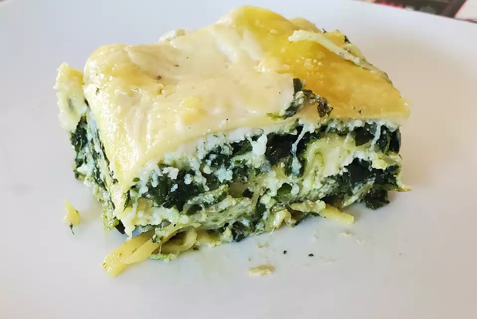

Lasagna

Description
Scrumptious lasagna with basil pesto, spinach and plenty of bubbly cheese.
Ingredients
- 1 pack noodles
- 2 tbsp olive oil
- 1 small onion, chopped
- 1 package frozen spinach, thawed
- 7oz basil pesto
- 30oz ricotta cheese
Steps
- Preheat the oven to 350 degrees F (175 degrees C).
- Bring a large pot of lightly salted water to a boil. Add lasagna and cook for 8 to 10 minutes or until al dente;
drain.
- In large skillet over medium heat, sauté onion in olive oil until tender. Stir in spinach; remove from heat and
stir in pesto.
- In a large bowl mix ricotta cheese, egg, salt, pepper, and nutmeg.
- In a 3-quart greased baking dish, layer noodles then spinach mixture, followed by ricotta mixture. Sprinkle with
mozzarella cheese. Repeat the layers ending with noodles on top. Spread Alfredo sauce on top of noodles and
sprinkle with Parmesan cheese.
- Cover with foil and bake in the preheated oven for 45 to 55 minutes.